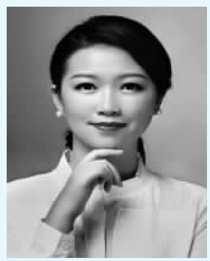

我的孩子是在2010年出生的，我跟所有的家长都一样，在2009年的时候满怀希望，期待着与孩子的见面。就这样，“80后”遇上了“10后”。“80后”具备什么特征？非常独立、高知、时尚，还有就是学习不再仅仅为了考试，我们对于教育的要求不再那么功利，更加关心孩子的身心健康。“溺爱”这个词，相对来说在“80后”家长当中放的比例不是那么重，我们会更加懂得尊重孩子，让孩子有更多空间。“10后”具备什么特征？第一，“10后”基本是比较快乐和幸福的，我经常问我的孩子“今天开心和快乐吗？有没有什么烦心事？最近有没有什么让你觉得很失望的事？有没有吃到好吃的？”如此等等，她的回答大多数是开心快乐的。“10后”的第二个特征是领悟能力很强，现在的孩子特别是“10后”，更加聪明。第三个特征是拥有话语权，现在孩子更多会自我表达，拥有更多表现欲，他们希望个性化的生活。
通过这些标志我们会发现“80后”这么完美，“10后”那么具有创意，他们两个放在一起是不是完美的匹配？我们对“80后”的父母做了一些调研发现以下三个特征：首先，“80后”的父母不太接受传统教育方式。第二个特征就是很多“80后”父母没有足够的时间陪伴孩子，时间对于“80后”来讲越来越宝贵。第三个特征是耐心程度稍弱一些。“80后”调研里面56%的家长认为自己是没有耐心的，34%的家长认为没有时间陪孩子，32%认为缺乏育儿知识，其实“80后”开始修身养性，也许我们第一个难题很容易被克服，但是这个确实需要时间。
当“80后”的父母遇上了“10后”的孩子，他/她们的世界会是怎样的呢？接下来，向大家介绍我今天要讲的三个主题，第一是尊重，如何和孩子相处，尊重他的权利。第二是陪伴，“80后”父母能够陪伴孩子的时间非常少。第三是自由。